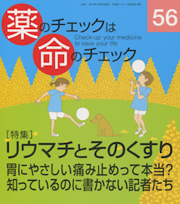
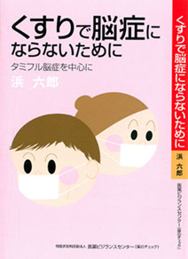
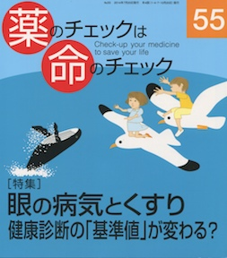
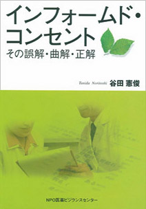

- 更新履歴
- 薬のチェックNo.85の用語索引 をアップしました。
- 『薬のチェック』速報No180（2019年11月15日）
タミフル：10代解禁で異常行動死が増加 - 独立医薬品情報誌 Vol.19-No.86（2019年11月発行）
- 書籍の注文： 内容を見て（薬のチェック その他） まとめて注文
- リンク（TIP誌フリーダウンロードへのリンクもあります）
- ご感想、ご意見はこちらへ
薬のチェックは、
「薬のチェックは命のチェック」と「正しい治療と薬の情報」TIP（The Informed Prescriber)を前身とし、2015年1月から薬のチェックTIPとしておりましたが、2019年からは、「薬のチェック」と名称を改めました。
薬のチェックは、前身の2誌および薬のチェックTIPと同様、製薬企業や行政の援助を一切受けず、広告もなく、購読料によって支えられているため、製薬企業や国に遠慮することなく、 中立の立場から薬剤を評価して本当の情報を載せることができます。
ぜひ、私たちの情報を、日常の診療に、また各人の健康に役立ててください。みなさんに購読していただくことで、 私たちのよりよい調査・分析・情報誌作りが可能となります。よろしくお願いします。
インタビュー（１）
小出裕章氏（京都大学原子炉実験所、大阪府熊取町）
にお会いしていろいろ聞いてきました。
インタビュー（２）
タミフルと突然死、コクラン共同計画のタミフルの効果と害について
（こちらの音声40分、
PDFで印刷）
|
編著：NPO医薬ビジランスセンター 発行年月:2014年12月 定価：2,000 円 |
PDF(English)download ユネスコ生命倫理学必修 監訳：浅井篤・高橋隆雄・谷田憲俊 発行年月:2010年12月 定価：1,400 円 |

最新号：56号 特集：リウマチとそのくすり バックナンバーはこちらから |

浜 六郎 著 |
|

最新号：55号 特集：眼の病気とくすり バックナンバーはこちらから |
最新号：54号 特集：排尿のトラブルとくすり バックナンバーはこちらから |

患者も医師も困っている—患者と医療者とが協同するために 著:谷田憲俊 |

暴走するのはクスリか？ 抗うつ剤（パキシルをはじめとするSSRI）を暴走させているのは？ いまや、クスリを暴走させる構造は、日本も欧米も区別がありません |